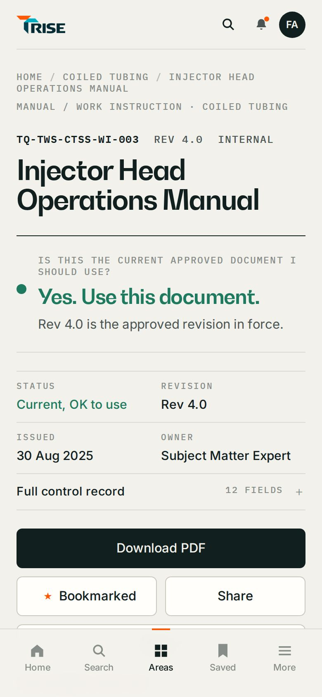
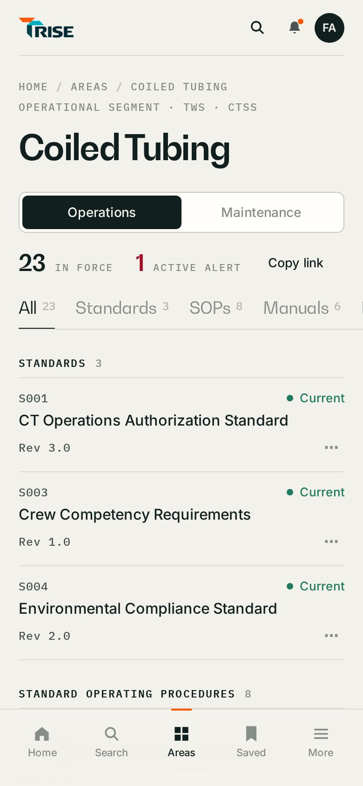
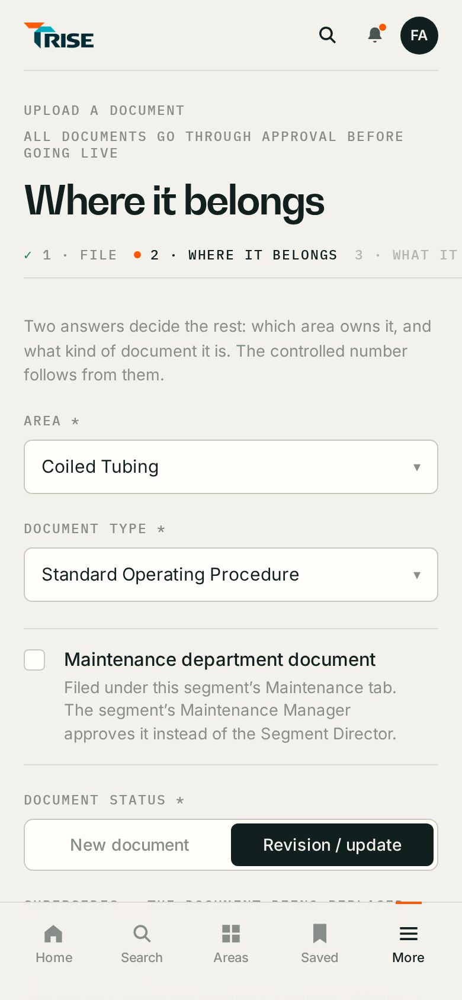
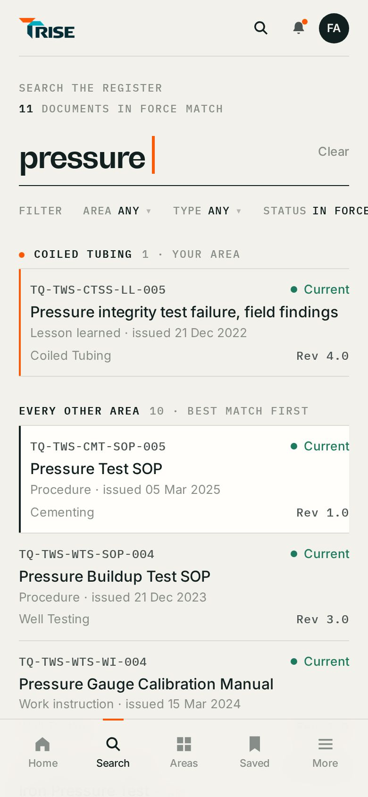

Your pick: the dark moving-photo hero with the live search answer, then bright rounded cards and the list.
bold-mix.html
RISE · TAQA knowledge · approved design language
119 screens, each at desktop 1440×900 and phone 390×844, built from the live register (585 records) with the live business rules. Role-aware: an Employee never sees QMS or Manager items. Anything not built today is tagged proposed. Design exploration only: nothing here touches the live application.
Feedback: too much text on the phone, and every screen looked the same. Now the top bar names the screen and gives a way back; labels, hints, side panels and second sentences stay on desktop; each kind of screen keeps one signature: the search line, the area switch, the coloured answer card, the step count, the waiting count.








Surprise me: two bold takes on Home, real data and TAQA photos.
Your pick: the dark moving-photo hero with the live search answer, then bright rounded cards and the list.
bold-mix.html
Opens from the Home photo panel: one big photo, then the 11 segments in one clean list.
family-segments.html
The three Centres of Excellence: Edmonton, Stavanger and Aberdeen.
family-products.html
The 10 corporate functions in one clean list.
family-functions.html
Dark and cinematic: moving photo, glass search with the live answer, bento cards, glowing status.
bold-night.html
Bright and modern: big type, pill search, floating cards on the photo, soft tiles.
bold-day.html
The front door: what RISE is, shown before sign-in and to anyone new to it.
Thesis, live search answer, real screens and figures, three ways in, file-to-force, five roles.
landing.html
Every area’s landing page, generated from the register.
One template; each area told apart by its register code and the real mix of its library.
segments.html
seg-company.html
seg-cementing.html
seg-coiled-tubing.html
seg-drilling.html
seg-fracturing.html
seg-inspection.html
seg-marine-services.html
seg-well-safety.html
seg-slickline.html
seg-well-completions.html
seg-well-testing.html
seg-wireline.html
seg-commercial.html
seg-finance.html
seg-geothermal-coe.html
seg-cybersecurity.html
seg-hr.html
seg-it.html
seg-learning-center.html
seg-legal.html
seg-qhse.html
seg-supply-chain.html
seg-pt-drilling-coe.html
seg-pt-completions-coe.html
seg-pt-intervention-coe.html
Find the right document and know it is the one to use.
Employee. Continue reading, changed in my area, alerts, saved. 352 in force.
home.html
Same page trimmed for the role: 423 in force, confidential alert note, “Your desk” line.
home-director.html


How search reads what you type. Areas to go straight to.
search.html
“inject”: document matches as you type.
search-typing.html

“pressure”: 11 for an Employee. Your area first.
search-results.html
WI-003 in 8 areas. Full register numbers; your area first.
search-number.html
Area, Type, Status, Issued: the four real filters.
search-filters.html
TQ-TWS-CTSS-SOP-003: red “Superseded. Do not use.” card.
search-superseded.html


Honest empty state, shorter-term suggestion, Ask an Expert.
search-none.html
19 for QMS, 11 for an Employee. Nothing hidden is hinted.
search-qms.html
Company policies plus three families, Employee counts.
areas.html
Operations side, all tabs, important now, your recent, recently changed, related.
area.html
Search in tab, sort, Bookmark / QR / Copy link.
area-sops.html


“No procedures match”.
area-nomatch.html
Bulletins and maintenance SOPs empty states; Software.
area-maint.html


Review flags, Overdue first, Manage segment.
area-director.html
12 CEO policies, one provisional number.
area-policies.html

The answer first, brief record, full record fold, actions, preview, related.
document.html
12-cell record, version history, approval trail.
document-controller.html
document-share.html


Sunlight Mode on.
document-qrc.html
Primary action becomes Fill in or print.
document-form.html
F001 Pre-Job Safety Checklist, sample-content note.
form.html
Bookmarks; Pinned offline lives here.
saved.html
saved-empty.html
Your submissions (built) + urgent alert / revised / information types.
notifications.html
“Waiting for your signature”.
notifications-director.html


Role functions live here on the phone.
more.html
account.html
Ask the people who know, and learn the language.


Five sections, routing card, response times, segment experts.
ask.html
Not-an-emergency-channel warning; missing title.
ask-critical.html
Annotation tools, thumbnails.
ask-photo.html
“This preview has no connected ticket system.”
ask-result.html
QMS triages; reference from the ticket system.
ask-sent.html


254 terms, 11 categories, A–Z, open row.
glossary.html


“WI”: two meanings with Also: notes.
glossary-search.html
BOP with related terms and documents.
glossary-term.html
glossary-none.html
Target BD-06 review flow.
glossary-propose.html
File a document: four panels, routing shown before you file.
upload.html


Fingerprint check.
upload-file.html
upload-file-error.html

Revision of SOP-009, number chip, route.
upload-where.html
upload-where-error.html
Locked maintenance tick, Maintenance Manager route, provisional MB.
upload-maint.html
Policy rules box; CEO approver flagged.
upload-policy.html
Duplicate hint, summary required.
upload-what.html
Derived register entry.
upload-review.html
Your submissions.
upload-done.html
document-draft.html
Reason, File it again.
document-returned.html
Locked fields, attempt 2.
upload-again.html
upload-acting.html
refuse-upload.html
Master List: the register, read and controlled.
Quick views, filters, sort, F086 export.
master.html
Preview first; never bulk reject.
master-bulk.html
Superseded SOP-003, read-only.
master-record.html
Read only, everything.
master-auditor.html
Employee.
refuse-master.html
The conformance check. QMS never gives final approval.
12 waiting.
workbench.html


Reason of at least 20 characters.
workbench-reject.html
Sent on for final approval.
workbench-done.html
Waits on an authorised final approver.
workbench-escalated.html
Master List and QMS check under More.
more-qms.html
Final approval, managing documents, delegation.
desk.html
Effective from.
desk-approve.html
Validation.
desk-reject.html
desk-approved.html
document-notyet.html
desk-maint.html
manage.html
manage-withdraw.html
Active, scheduled, expired, revoked; evidence ids.
delegation.html
Two independent permissions; reason.
delegation-new.html
delegation-revoke.html
Acting bar, Stop acting.
desk-delegate.html
A broken grant holds no powers.
acting-broken.html


refuse-desk.html
account-director.html
more-director.html
Every state reads the same everywhere.
states.html
document-superseded.html
document-withdrawn.html
document-unavailable.html
document-denied.html
Only the components the screens use.
system.html
| Journey | Screens | Desktop | Phone |
|---|---|---|---|
| Bold homepage directions | Chosen · Night Shift hero + Daylight cardsFamily · Operational segmentsFamily · Products & TechnologyFamily · Corporate functionsA · Night ShiftB · Daylight | 6 | 6 |
| Landing | Landing page | 1 | 1 |
| Segment landings | All 25 area landingsCompany WideCementingCoiled TubingDrilling ServicesFracturingInspectionMarine ServicesSafety ServicesSlicklineWell CompletionsWell TestingWireline ServicesCommercial & SalesFinanceGeothermal Center of ExcellenceGovernance, Risk & ComplianceHuman ResourcesInformation TechnologyLearning and DevelopmentLegalQHSESupply ChainDrilling Solutions Center of ExcellenceWell Completions Center of ExcellenceWell Intervention Center of Excellence | 26 | 26 |
| Employee | HomeHome · Segment DirectorSearch · startSearch · typingSearch · results with previewSearch · same local numberSearch · filtersSearch · exact superseded numberSearch · no resultsSearch · restricted results (QMS)AreasArea · Coiled TubingArea · SOPs tab with ⋯ menuArea · no match in tabArea · Maintenance sideArea · Director viewCompany policiesDocument · current (Employee)Document · controller view (QMS)Document · share / QRDocument · quick reference cardDocument · form recordForm · fill in and printSavedSaved · emptyNotifications · EmployeeNotifications · approval requestMore (phone)Account | 29 | 29 |
| Knowledge tools | Ask an ExpertAsk · Critical + validationAsk · photo markupAsk · not sent (built)Ask · sent (target BD-04)Field GlossaryGlossary · searchGlossary · termGlossary · no matchGlossary · propose a term | 10 | 10 |
| Publishing | Upload · 1 FileUpload · file addedUpload · file refusedUpload · 2 Where it belongsUpload · number already usedUpload · Maintenance BulletinUpload · Policy (QMS)Upload · 3 What it isUpload · 4 Check the recordUpload · filedYour filing · waiting on QMSYour filing · returnedUpload · filing againUpload · refused while actingUpload · refused for Auditor | 15 | 15 |
| Document Control | Master List · QMSMaster List · bulk confirmMaster List · record drawerMaster List · AuditorMaster List · refused | 5 | 5 |
| QMS | QMS check · queue + recordQMS check · returnQMS check · confirmedQMS check · restricted, escalatedMore · QMS (phone) | 5 | 5 |
| Management | Director deskDirector · approveDirector · returnDirector · approvedApproved, not yet effectiveMaintenance Manager deskManage documentsWithdrawDelegation · grantsDelegation · grantDelegation · revokeActing as delegateDelegation endedDesk · refusedAccount & delegationMore · Director (phone) | 16 | 16 |
| States | States catalogueDocument · supersededDocument · withdrawnNot available to your roleAccess restrictedRegister design system | 6 | 6 |
Built on branch design/rise-exploration · static prototypes in docs/design/rise-exploration/register · data read-only from documents-master.js and glossary.html.